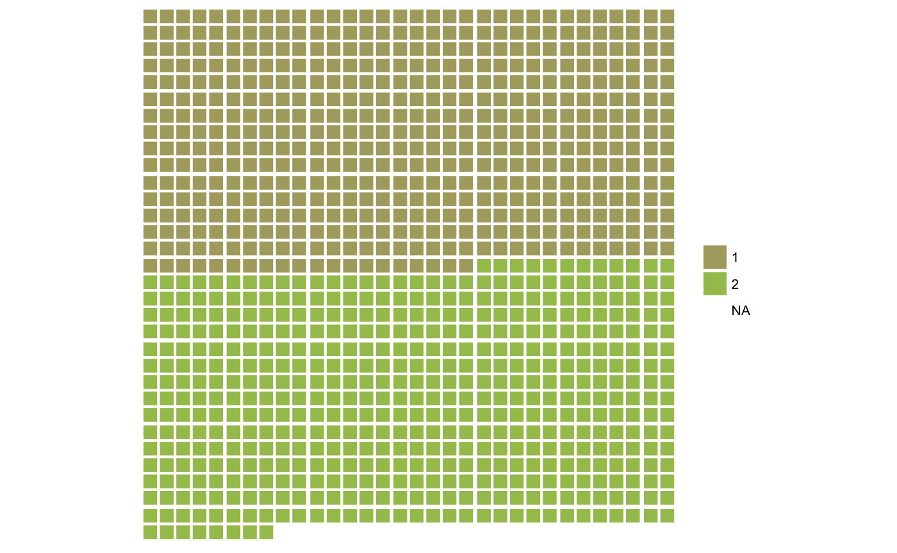

Pass in a a variable and get a waffle plot. Useful to display simple counts or if the variable has different values, a square pie chart. If the variable has a length that makes the individual squares hard to see, consider showing hundreds, thousands etc.
qplot_waffle_tile(x, rows = NULL, cols = NULL)
| x | a variable with not too many unique values |
|---|---|
| rows | defaults to the rounded up square root of the number of values |
| cols | defaults to the rounded down square root of the number of values |
This function allows and requires the least tinkering, but also does not drop shadows. To avoid the Hermann grid illusion, don't use dark colours.
adapted from http://shinyapps.stat.ubc.ca/r-graph-catalog/ who adapted it from http://www.techques.com/question/17-17842/How-to-make-waffle-charts-in-R who adapted it from http://ux.stackexchange.com/a/46543/56341
qplot_waffle_tile(rep(1:2,each=500))#> Warning: Ignoring unknown parameters: show_legend